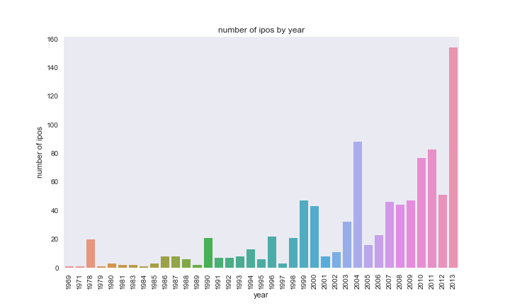
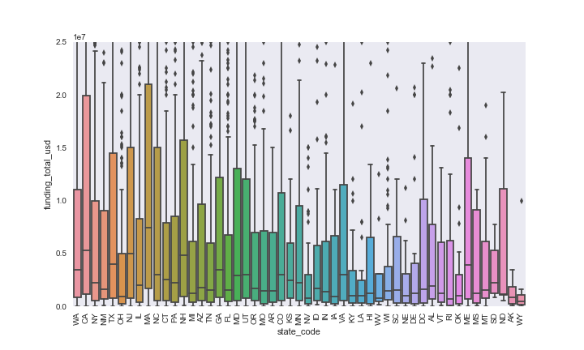
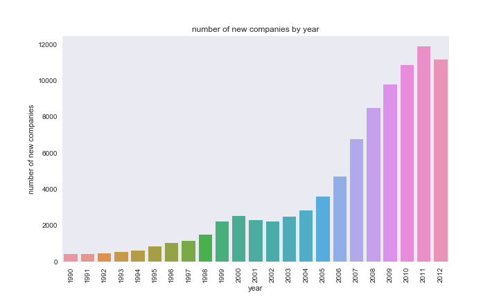
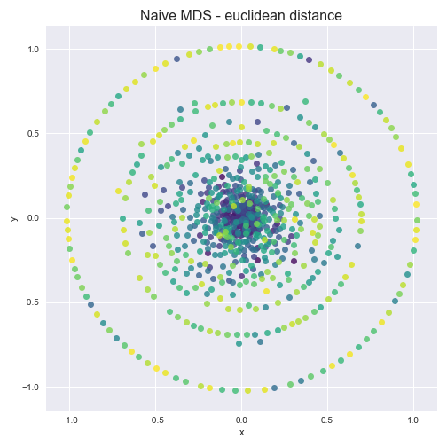
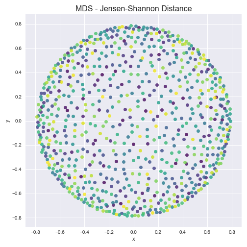

Summary: Can we predict a start-up’s success?¶
Authors: Annie Maslan, Jack Moorer, Mitch Negus
Overview¶
We begin by exploratory analysis of the various factors we hypothesize may influence a company’s success. We consider the following factors: 1. Valuation and number of IPOs by place and time 2. Total funding by place and time 3. Investor portfolio correlations
Exploratory Analysis¶
1. Valuation and number of IPOs by place and time¶
We first consider the number of IPOs by region. The data provided in the ‘cb_ipos’ table is lacking the valuation amount for many companies. When filtering for entries that have valuation amount included, we have an N of 167. We continue with this valuation analyis but will subsequently look at total funding in part 2 for a larger dataset that may also indicate company success. We find that SF Bay has the highest number of companies that IPO (34) with NYC in second (11) and London in third (8). In the below barplot, we consider the regions that had >5 companies IPO in order of decreasing number of companies. Seattle has the highest average valuation for companies that IPO; however, if we consider a barplot of the same data we see that Seattle with 7 companies is more sensitive to outliers and has a broader distribution. This additional analysis can be found in the supplementary notebook ‘location_time.ipynb.’
valuation by region
We next look at the number of IPOs over time to determine how timing may affect a company’s success. We no longer restrict our analysis to companies where valuation amount is provided. More recent years have more IPOs. However, we cannot rule out the possibility that the Crunchbase dataset is also simply becoming more complete over time. 
From this analysis of valuation and number of IPOs by place and time, we may predict that start-ups that originate in SF Bay and New York in the years since 2007 would be most successful. However, we have also found many shortcomings in the Crunchbase data suggesting that some findings may be more so dependent on improved quality of complete data entry in more recent years.
2. Total funding by place and time¶
While we had been considering valuation amount from the IPO data, we also consider funding_total_usd for the below analysis because it is a much richer dataset. We have N=27,874 instead of N=167. The median funding is greatest in CA and MA. 
Just as we looked at the number of IPOs over time, we now look at the emergence of new companies over time. Looking at the period from 1990-2012, we see that the number of new companies in on the rise. As with the IPOs data, we have to consider that the Crunchbase dataset may be becoming more exhaustive. 
We also consider the lifespan of companies and find that the median is 3 years, and that the lifespan does not vary significantly by state. For all supplementary related analysis, refer to ‘location_time.ipynb.’
From the analysis of funding by state and number of new companis over time, we can hypothesize that companies in CA and MA that are founded in more recent years will be most successful.
3. Investor portfolio correlations¶
If a company can get a certain investor, are there other investors the company is likely to get as well? We consider the correlation among investors using multidimensional scaling with the ultimate goal of determing whether certain investor portfolios cluster. We create a company matrix, whose columns are company vectors for each investing company. Each matrix entry is a count of the number of occurences of each company in the investor portfolio. The resulting matrix is very sparse; it is compose of 99.76% zeros. We normalize the matrix to represent the probability of investing in a given company for each given investor. Using Multidimensional Scaling with both euclidean distance and Jensen-Shannon distance calcuations, no clusters are evident.
 
From this very sparce investor-company distance matrix data we cannot conclude any compelling correlations among investors. We also try a variety of subsets of the data in the hopes that some correlations may arise. For example we consider just the top 5% of companies in terms of funding total, just companies in CA, just biotech companies, etc. For each of the filters we tried, no clusters formed. Therefore, we do not identify any correlations among investor portfolios.
4. Executive Education¶
Executives at some of the highest performing businesses need to get their starts somewhere. For some, like Facebook’s Mark Zuckerberg, their backgrounds do not include a college degree. This however seems to be the minority. Still, the premise begs the question: are there schools which tend to produce more successful business executives? Is there a direct correlation between which institution you receive a degree from and eventual success?
To answer these questions, we first need to define a benchmark for a company’s success. This could simply be whether the company is still operating or not (presumably companies that are not still operating were unsuccessful), or it could also be related to the company’s total valuation. Instead, we use the total funding acquired in all funding rounds for a company. Note that this is itself an imperfect metric. Some highly successful companies might require less capital investment than others, so this statistic could be biased in favor of capital intensive companies. We will assume that this is not so overwhelming to render the metric worthless. Funding totals for the top 100 businesses are plotted below.
Using this metric, we find that slightly more than 25% of the companies in the Crunchbase dataset raised over $10 million in funding rounds, and so we select this subset as “the top businesses”. For the more than 7,000 companies in that sample, we match individuals (who are paired with degree information) to those companies. Together, the degree information for successful companies let’s us create a visual to show how many degrees each university has conferred to affiliates of all companies in the top tier of fundraising businesses.
5. Prediction of Success¶
The first question when asked when we found this dataset is can we predict startup success, and if so, what are some important predictors of success in business. Much of this dataset was focused on data we probably know is highly correlated with success, for example, money evaluation, investments, funding rounds, etc. We easily could have used some of these features and attempted to predict start up success with them, but there is a good chance what we find is pretty trivial: more likely that not a company with a large number of investor, a lot of funding, and a high evaluation will be successful, but that isn’t that interesting. Instead, we wanted to focus on purely categorical features (so discrete variables) of a business based on the company itself and its founder. These variables include what industry the company is in, what highest level of degree did the founder receive, or what region is company is based in. I also included logo size, which is not discrete, just because I thought it would be funny. The full list of features we used are:
- company category_code
- whether they had funding (yes or no)
- number of investors
- number of relationships to other founders
- company logo height
- company logo width
- region
- degree_type (highest degree)
- institution (for highest degree)
- subject (for highest degree)
- first name
- last name
The way we are measuring success here is via company status, and in a binary case whether the business was closed or not. The different categories for status were whether the business was closed, acquired, an IPO, or operating. The closed response variable was just encoded as “Yes” for closed and “No” for not closed.
There were two big issues while preprocessing the data for classification. The first was that a lot of the Object dataframe, which contained the majority, of the data was empty. One of the main reasons why is that for many of the feature variables we are using, the data put values equivalent to 0 or ‘None’ (ie if the company did not have a logo) to missing values. In fact, the dataset usually used the string ‘unkown’ as its NaN/None value, which does not come up as a null entry in python. After examining the data, we determined which variables had None or NaN that could be converted to useful values, and encoded them. We then switched ‘unkown’ to NaN so we could drop it later.
The next issue was there was no easy way to combine the dataframes. The dataframes had object ids that corresponded to the id in the Object dataframe, however, data on companies had different object ids than information about the same company’s founder. In addition, when we determined we could merge the data frames through company name, many duplicates appeared, and several founder from the same company existed in the dataframe. These duplicates certainly would have affected any classification model we tried to use.
I want to take a moment to talk about the structure of this dataset. The data-preprocessing portion of this project took much longer than it should have if it was a well-documented, well-formatted dataset. There was no documentation we could find on what the features represented or how the data was organized. In the end the assumptions we made during this preprocessing, which were necessary in order to have a “large enough” dataset, may have severely affected model performance and inference. In addition, the time it took to understand how the data was structured, what certain features represented, and combine the data in a useable way, ended up taking time away from analysis. I actually was planning on doing a separate regression based predictive model on continuous variables, but the issues I discussed in this paragraph left me so frustrated with the data I decided it wasn’t worth it. I thought that my frustrations might be relevant in a course based on reproducibility, but I digress.
After merging all features and response into one dataframe and dropping NaN values, we explored the relationship between the feature variables and response variables. For feature variables that had numeric values we looked at the boxplots of each type category of response for both the status and closed variables. Here is an example of a status vs number of milestones and closed vs number of milestones.
num_milestones_status_boxplot
num_mile_closed_boxplot
We also looked at the relationship between what I called the purely “string based” categorical variables and response by plotting the relative frequencies of the response variables in each category of the features. It was important we looked at relative response due to unbalanced frequencies in the response and feature variables. Here are the plots for category code on satus and had funding on closed.
cat_code_status
had_fund_closed
At this point we were ready to train and predict a classification model on our data. Before I talk about the methods I used and process let’s look at the distributions of the response variables.
status_dist
closed_dist
As you can see there is a huge imbalance in the distrubtions of our response variables. This is going to be a serious issue for our predictive models. I detail this issue more in the classification notebook, but here is a quick example for why model performance will be affected by reponse category imbalance. Say we are trying to predict whether someone has a very rare disease, say 0.001 percent of the population has this disease. When we fit our model, it will look at the accuracy of prediction in order to determine its internal features. However, in this case, a model that predicts that you don’t have the disease every time has an accuarcy of 99.99 percent; obviously this model is very accurate, but in reality it does nothing.
One more note about the structure of our data, sklearn currenlty does not accept non-integer predictors. This was unfortunate, and my two options were to convert the data into a huge, high-dimensional dumby matrix, or encode each variable with string values. I decided to encode the variables, however, you can read why this is an issue in the classification notebook.
The models we used for classification were a random forest and extremely randomized trees. The main reason we choose these two methods were a) they have a fantastic built in ability to provide inference to feature importance, and b) once we discovered extremely randomized trees we wanted to compare its results to the similar random forest model. I also decided to work with random forests (and tackle this classification question in general) in order to explore sklearn. I (Jack) just spent the semester learning about machine learning methods in r, so I decided to work with random forests to teach myself how to use sklearn’s RandomForestClassifier and compare it to the randomForest r package.
Before fitting a model on the data, I had to tune hyperparameters, and luckily sklearn provides GridSearchCV to help me in this process. For random forest I tuned 3 hyperparameters, the number of random features for each tree in the bootstrap process, the number of estimators (trees) used, and the maximum depth of each tree. Due to runtime issues, I later skipped tuning the number of estimators for the extremely randomized trees model. Sometimes maximum depth of trees is note tuned, and originally this is what I did (leaving the maximum depth of the tree as the default none), however, because of the imbalance in response category frequency maximum depth gave us horrible results, and had to be tuned.
Looking at the status response variables¶
Random Forest¶
I will start with the four category status response variables. Originally for the cross-validation metrix used to tune the parameters of the models I used the defeault accuracy, and got horrible results with high accuracy, but useless results, as they generally overclassified the ‘operating’ category in order to be accurate. Instead, I used the scoring metric f1_weight, which is based both on model accuracy and precision. For random forest I plotted the results of the hyperparameters like in this example.
fr_status_cv
Here you see how the weighted f1 score changed basde on the max depth of the tree grouped by the max features of the tree in seperate panels for the number of estimators used. Notice the shape of all of the plots. The reason this is happening is that as depth increases, the model will overpredict the frequent ‘operating’ variable. If I were to use accuracy as the cross validation metric, you would see a monotonically increasing function for each line.
A ‘best’ random forest was picked using the best combination of parameters, then the random forest was fit on the training data. I will cover feature importance at the end of the this status section. Perforamnce, was mixed for the random forest. The model accuracy was about 82 percent, however, looking at the confusion matrix showed sporatic results. Using an f1 score did allow our model to predict more than just the operating status, and at the end of the section on random forests using status I showed an example of what the confusion matrix would have looked like had we used accuracy as our performance metrix. In this confusion matrix, almost every test individual was predicting to be operating, providing a high accuracy, but showing the difficulty working with unbalanced models.
Extremely Randomized Trees¶
I discovered ExtraTrees when looking up how to deal with unbalanced data in a random forest. An extremly randomized trees model (or ExtraTreesClassifier in sklearn) is similar to a random forest, except that instead of using a boostrap process to estimate node splits, it splits node with a completely random decision boundary. I read this paper that introduced Extra Trees in order to understand what is going on, and the decision to increase randomness is centered on the bias-variance tradeoff: a model’s variance should increase with increased randomness without an huge increase in bias.
Here is an example of the cross validation plot using max depth and numbe of features for ExtraTrees.
ext_cv_status
As you can see performance is monotonically increasing with an increase in depth, and after fitting the “best” model and examining the results I looked at the confusion matrix of different depth levels. In general, the ExtraTreesClassifier performed like the same RandomForest with a depth decrease of about 2. We can see that the ExtraTrees classifier was less accurate, but slightly better at predicting the less frequent status categories compared to random forest.
Feature Importance¶
Our preditive results for the random forest and extremely randomized trees models were mixed, but the nice thing about tree based models is that even though they generally don’t provide fantastic predictive performance, we can still examine feature importance
var_imp_rf_st
var_imp_ex_status
We can see the feature importance of the two models is similar, which is expected since they have a similar process. From these results we can see number of relationships with other founders is the feature that best splits the data here. Many of the features have similarly low importance, especially the string based features. I will go over later why I think these features simply aren’t important for predicting company status
Looking at the closed response variables¶
I wasn’t very happy with the f1 scoring metric, however, it was hard to find a better one. However, one great metric for evaluating imbalanced data is the AUC or area under the curve an ROC curve. In order to use AUC as the performance metric I had to use a two category predictor, hense the closed response variable
Random Forest¶
Here is an example of the cross validation results based on AUC from the random forest model:
rf_closed_cv
As you can see we are actually getting interesting results based on AUC. I fit the random forest based on the parameters with the best AUC and evaluated the performance. While accuracy was near 70 percent, we can see that this random forest was actually able to predict the vast majority of ‘Yes’ closed responses in the data set, even if it came at a cost of predicting many wrong ‘No’ individuals. At this point in the project, I treated this as success, as the problem kind of transformed into finding a model that could predict the very rare closed response case. Here is the ROC cruve for this model.
rf_closed_roc
Extremely Randomized Trees¶
Here is an example of the cross validation plot from ExtraTrees on closed
ext_closed_cv
As you can see we are once again getting interesting results. I fit the model based on the best combination of parameters and looked at the model importance. Performance of this model was not great, despite using AUC as the scoring stat. The model accuracy was in the low 60 percentages, and the ExtraTrees model in general had the same rate of success in predicted the ‘Yes’ variable as random forest with worse results in predicting the ‘No’ variable. In this case random forest performance was cleary superior. Here is the ExtraTrees ROC.
ext_roc
Feature Importance¶
Results for the closed section were mixed. I was expecting a much better model than the models on the status reponse variable, however, that was not really the case. Unlike the previous resonse variable, we were able to say that the random forest model outperformed the extremly randomized tree model, which suprised me given that I expected ExtraTrees to perform better on this highly imbalanced dataset. Once again we can look at the feature importance, despite the fact the predictive power of the models are poor.
rf_cl_imp
ex_closed_imp
Here we get pretty consistant feature importance statistics for both models. For whether a business was closed or not, whether the company had funding was the most important predictor, followed by category code and founder degree subject.
Discussion On Predictors Choosen¶
I mentioned that I purposely picked features that do not naturely seem like they have predictive power in business status for this section. After fitting our tree based models, I decided to look at the string based categorical varaibles, that generally had very low importance in our data, and see if they were able to seperate our data.
This section at first developed from my plan to fit a KNN on a matrix of dumby features, and then due to curse of dimensionality, reducing the dimensions via feature selection to see if performance improved. The rationalle was that, while we probably couldn’t get feature importance out of a knn, at least we could have high predictive power.
However, knn is based on Euclidean distances, so first I decided to look at a low dimensional view of our data using the Euclidean distances from the dumby matrix of categorical variables and MDS. This process was very similar to part of project 2. Remember the features involved in this MDS 2D projection do not include num_investments, num_relationships, num_milestones, logo_hieght, and logo_width, which were some of the most important features for the status section.
mds_status
mds_closed
As you can see, especailly for the status plot, there is no real clear pattern that the categories takes, and the mds plot does not really show that euclidean distances truly seperate the data. The results are slightly different for closed, where the categorical variables used in these MDS projection did have more importance, but there is just so much blue that it is hard to find the orange section of the plot.
The reason I included this is that these plots lead me to believe that these highly categorical features like school subject or first name did not seperate the data in any real way based on how we currenlty have set up the data. This lead me to say that the results of this section are ambigous. While we were able to find importance categorical features in prediction start up status, the model performance and MDS plots imply that these features may not actually seperate the data. Obvsiouly, more extensive analysis is needed to come to a final conclusion.
Author Contributions¶
Annie Maslan¶
Annie focused on the exploratory analysis sections about valuation and number of IPOs by place and time, total funding by place and time, and investor correlations. She also made the Makefile, did the MySQL/environment set-up, and Sphinx build.
Jack Moorer¶
Jack focused on the classification section of this project through the classifcation_data_prep notebook and and classification notebook.
Mitch Negus¶
Mitch focused on the analysis of how education is correlated with business success. Since institution names were recorded inconsistently in the crunchbase dataset, he developed a tool to aggregate data for a single institution recorded under many names. He also worked to make the Travis CI builds and tests compatible with MySQL databases and improve functionality for databases requiring custom credentials.